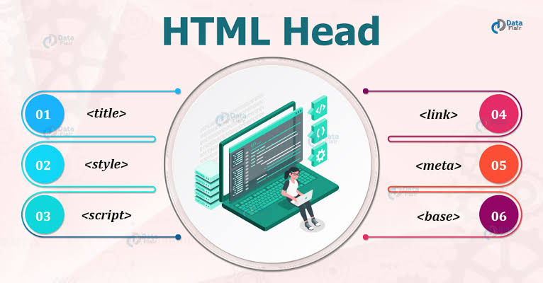
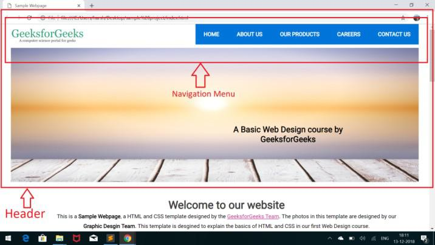
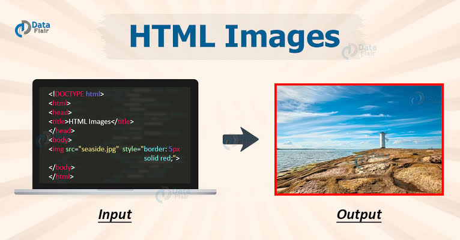

Tag html
O elemento **HTML **(ou HTML root element) representa a raiz de um HTML ou XHTML documento. Todos os outros elementos devem ser descendentes desse elemento.

Tag Body
O elemento
do HTML representa o conteúdo de um documento HTML. è permitido apenas um por documento.
Tag Head
O elemento HTML
providencia informações gerais (metadados) sobre o documento, incluindo seu título e links para scripts e folhas de estilos.
Tag Header
O elemento HTML

Tag Footer
O elemento HTML de Rodapé (
Tag Audio
O elemento audio é utilizado para embutir conteúdo de som em um documento HTML ou XHTML.O elemento audio foi adicionado como parte do HTML5.

Tag Img
O elemento **HTML **(or HTML Image Element) representa a inserção de imagem no documento, sendo
implementado também pelo HTML5 para uma melhor experiência com o elemento figure e figcaption.
